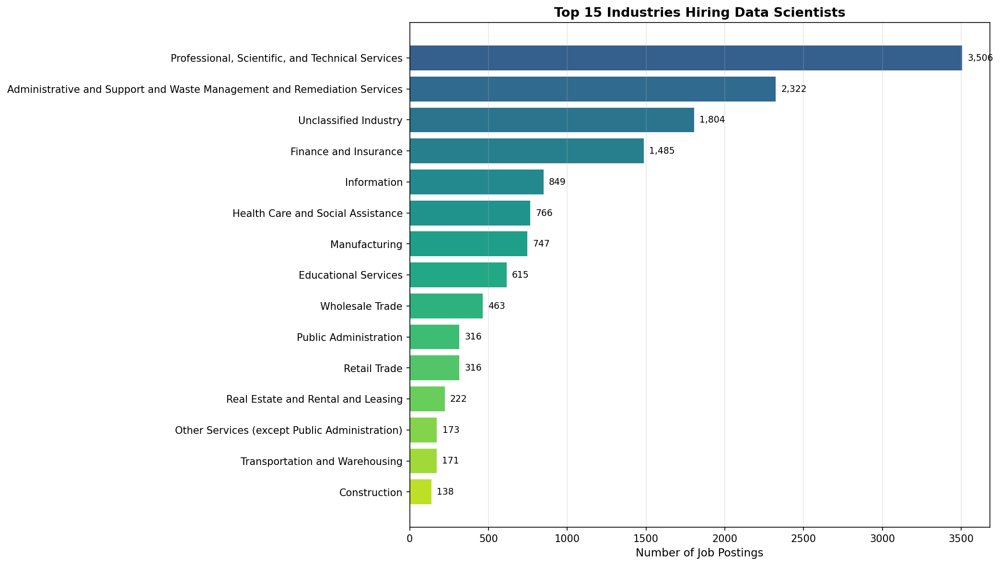
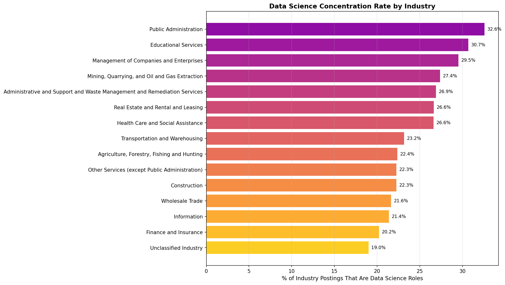
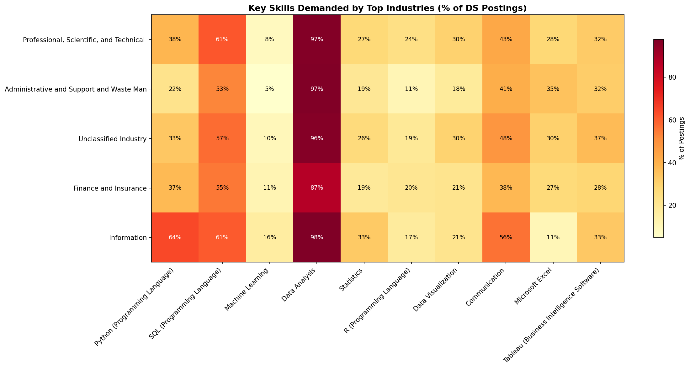
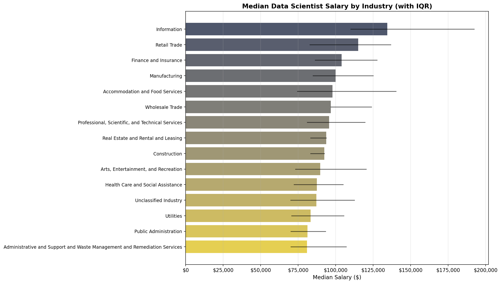

Total postings: 72,454What Industries Are Hiring the Most Data Scientists and Why?
Introduction
Data science has become a strategic priority across virtually every sector of the economy. Davenport and Patil (2012) first brought widespread attention to the explosive demand for data scientists, noting that companies across industries were competing to hire professionals who could extract insights from large, unstructured datasets. A decade later, Davenport and Patil (2022) revisited this claim and confirmed that data science remains one of the fastest-growing professions, with the U.S. Bureau of Labor Statistics projecting more growth than almost any other field through 2029.
The diffusion of data science hiring beyond the technology sector has been well documented. Manyika et al. (2011) predicted that data-driven decision-making would create significant talent shortages across healthcare, retail, and manufacturing. More recently, Alshahrani et al. (2024) conducted a comprehensive survey of data science applications in job market analysis, finding that industries ranging from finance to government are leveraging data science for workforce planning, customer analytics, and regulatory compliance. Çelik and Bozdağ (2023) examined data scientist job postings using text mining and confirmed that core skills like Machine Learning, Python, and Statistics are consistently demanded across sectors.
This analysis uses the Lightcast job postings dataset to identify which industries are hiring the most data scientists, examine what skills and qualifications these industries prioritize, and explore why certain sectors have emerged as leading employers.
Data Loading
We load the cleaned Lightcast dataset produced by our shared Data Cleaning page. This file has already been deduplicated, date-parsed, and had its skills columns split into Python lists.
Identifying Data Science Roles
We filter the dataset to postings related to data science using keywords matched against the title_name and onet_name columns. This dual-column approach ensures broad coverage of data science roles regardless of how individual employers title their positions.
Data science related postings: 14,214 (19.6% of all postings)Top Industries Hiring Data Scientists
We use the NAICS 2-digit industry classification (naics2_name) to group data science postings by sector. This level of aggregation provides a clear view of which broad industry categories are driving demand. The cross-industry spread of data science hiring aligns with what Manyika et al. (2011) anticipated — that demand for analytical talent would extend well beyond the technology sector into healthcare, finance, and manufacturing.
=================================================================
TOP 20 INDUSTRIES HIRING DATA SCIENTISTS
=================================================================
Rank Industry Count %
-----------------------------------------------------------------
1 Professional, Scientific, and Technical Services 3,506 24.7%
2 Administrative and Support and Waste Management and Remediation Services 2,322 16.3%
3 Unclassified Industry 1,804 12.7%
4 Finance and Insurance 1,485 10.4%
5 Information 849 6.0%
6 Health Care and Social Assistance 766 5.4%
7 Manufacturing 747 5.3%
8 Educational Services 615 4.3%
9 Wholesale Trade 463 3.3%
10 Public Administration 316 2.2%
11 Retail Trade 316 2.2%
12 Real Estate and Rental and Leasing 222 1.6%
13 Other Services (except Public Administration) 173 1.2%
14 Transportation and Warehousing 171 1.2%
15 Construction 138 1.0%
16 Accommodation and Food Services 81 0.6%
17 Management of Companies and Enterprises 80 0.6%
18 Utilities 75 0.5%
19 Mining, Quarrying, and Oil and Gas Extraction 46 0.3%
20 Arts, Entertainment, and Recreation 22 0.2%
Data Science Concentration by Industry
Raw posting counts can be misleading — a large industry may post many data science jobs simply because it posts many jobs overall. To control for this, we calculate the data science concentration rate: the percentage of an industry’s total postings that are data science roles. This reveals which industries are most intensely focused on hiring data scientists relative to their overall hiring volume.
======================================================================
DATA SCIENCE CONCENTRATION BY INDUSTRY (min 50 total postings)
======================================================================
Industry Total DS DS %
----------------------------------------------------------------------
Public Administration 970 316 32.6%
Educational Services 2,004 615 30.7%
Management of Companies and Enterprises 271 80 29.5%
Mining, Quarrying, and Oil and Gas Extraction 168 46 27.4%
Administrative and Support and Waste Management and Remediation Services 8,628 2,322 26.9%
Real Estate and Rental and Leasing 833 222 26.6%
Health Care and Social Assistance 2,877 766 26.6%
Transportation and Warehousing 738 171 23.2%
Agriculture, Forestry, Fishing and Hunting 76 17 22.4%
Other Services (except Public Administration) 777 173 22.3%
Construction 620 138 22.3%
Wholesale Trade 2,141 463 21.6%
Information 3,967 849 21.4%
Finance and Insurance 7,342 1,485 20.2%
Unclassified Industry 9,488 1,804 19.0%
Skills Demanded by Top Industries
Different industries may require different skill profiles from their data scientists. Here we compare the most in-demand skills across the top 5 industries to understand how employer expectations vary by sector. Çelik and Bozdağ (2023) found that while core skills like Python and Machine Learning are universally demanded, the relative importance of domain-specific competencies shifts significantly across industries.
=======================================================
Professional, Scientific, and Technical Services (3,506 postings)
=======================================================
1. Data Analysis 3,393 (96.8%)
2. SQL (Programming Language) 2,146 (61.2%)
3. Communication 1,500 (42.8%)
4. Python (Programming Language) 1,347 (38.4%)
5. Tableau (Business Intelligence Software) 1,129 (32.2%)
6. Dashboard 1,118 (31.9%)
7. Data Visualization 1,059 (30.2%)
8. Power BI 1,024 (29.2%)
9. Microsoft Excel 977 (27.9%)
10. Statistics 960 (27.4%)
=======================================================
Administrative and Support and Waste Management and Remediation Services (2,322 postings)
=======================================================
1. Data Analysis 2,257 (97.2%)
2. SQL (Programming Language) 1,223 (52.7%)
3. Communication 950 (40.9%)
4. Microsoft Excel 804 (34.6%)
5. Tableau (Business Intelligence Software) 735 (31.7%)
6. Management 703 (30.3%)
7. Detail Oriented 688 (29.6%)
8. Computer Science 684 (29.5%)
9. Dashboard 670 (28.9%)
10. Power BI 648 (27.9%)
=======================================================
Unclassified Industry (1,804 postings)
=======================================================
1. Data Analysis 1,737 (96.3%)
2. SQL (Programming Language) 1,031 (57.2%)
3. Communication 872 (48.3%)
4. Tableau (Business Intelligence Software) 667 (37.0%)
5. Power BI 650 (36.0%)
6. Python (Programming Language) 604 (33.5%)
7. Dashboard 590 (32.7%)
8. Problem Solving 567 (31.4%)
9. Management 557 (30.9%)
10. Computer Science 552 (30.6%)
=======================================================
Finance and Insurance (1,485 postings)
=======================================================
1. Data Analysis 1,296 (87.3%)
2. SQL (Programming Language) 819 (55.2%)
3. Management 665 (44.8%)
4. Communication 559 (37.6%)
5. Python (Programming Language) 552 (37.2%)
6. Presentations 507 (34.1%)
7. Writing 428 (28.8%)
8. Tableau (Business Intelligence Software) 423 (28.5%)
9. Problem Solving 418 (28.1%)
10. Dashboard 408 (27.5%)
=======================================================
Information (849 postings)
=======================================================
1. Data Analysis 829 (97.6%)
2. Python (Programming Language) 545 (64.2%)
3. SQL (Programming Language) 515 (60.7%)
4. Communication 477 (56.2%)
5. Computer Science 446 (52.5%)
6. Dashboard 426 (50.2%)
7. Extract Transform Load (ETL) 425 (50.1%)
8. Data Modeling 388 (45.7%)
9. Data Quality 381 (44.9%)
10. Data Warehousing 380 (44.8%)
Salary Comparison Across Industries
Compensation is a key indicator of how much an industry values data science talent. We compare median salaries across the top industries to understand which sectors are paying a premium for data scientists. Davenport and Patil (2022) noted that experienced data scientists command salaries approaching $200,000 in some markets, but compensation varies significantly by industry and region.
===========================================================================
SALARY COMPARISON FOR DS ROLES BY INDUSTRY (min 10 postings with salary)
===========================================================================
Industry N Median Mean 25th 75th
---------------------------------------------------------------------------
Information 592 $ 134,500 $ 154,213 $ 110,155 $ 192,272
Retail Trade 132 $ 115,000 $ 111,432 $ 82,796 $ 136,700
Finance and Insurance 691 $ 104,000 $ 107,705 $ 86,390 $ 127,550
Manufacturing 251 $ 100,000 $ 106,186 $ 84,974 $ 125,000
Accommodation and Food Services 28 $ 97,840 $ 105,823 $ 74,525 $ 140,250
Wholesale Trade 299 $ 96,750 $ 103,759 $ 96,750 $ 123,850
Professional, Scientific, and Technical 1099 $ 95,680 $ 102,617 $ 81,120 $ 119,600
Real Estate and Rental and Leasing 105 $ 93,650 $ 91,986 $ 83,250 $ 93,650
Construction 58 $ 92,500 $ 89,514 $ 83,275 $ 92,500
Arts, Entertainment, and Recreation 16 $ 89,736 $ 99,117 $ 73,250 $ 120,260
Health Care and Social Assistance 378 $ 87,531 $ 90,466 $ 72,306 $ 104,884
Unclassified Industry 841 $ 87,142 $ 93,653 $ 70,000 $ 112,500
Utilities 44 $ 83,321 $ 88,066 $ 70,726 $ 105,500
Public Administration 245 $ 81,195 $ 82,443 $ 70,123 $ 93,180
Administrative and Support and Waste Man 1184 $ 80,900 $ 90,630 $ 70,156 $ 107,000
Education Requirements by Industry
We examine whether different industries have varying education expectations for data science roles, which may help explain hiring patterns and talent pipeline challenges.
Professional, Scientific, and Technical Services (3,506 postings)
Bachelor's degree 2,176 (62.1%)
No Education Listed 1,040 (29.7%)
Master's degree 150 (4.3%)
High school or GED 95 (2.7%)
Associate degree 43 (1.2%)
Administrative and Support and Waste Management and Remediation Services (2,322 postings)
Bachelor's degree 1,201 (51.7%)
No Education Listed 883 (38.0%)
High school or GED 149 (6.4%)
Associate degree 55 (2.4%)
Master's degree 33 (1.4%)
Unclassified Industry (1,804 postings)
Bachelor's degree 1,119 (62.0%)
No Education Listed 500 (27.7%)
High school or GED 82 (4.5%)
Master's degree 51 (2.8%)
Associate degree 49 (2.7%)
Finance and Insurance (1,485 postings)
Bachelor's degree 1,013 (68.2%)
No Education Listed 341 (23.0%)
Associate degree 56 (3.8%)
Master's degree 43 (2.9%)
High school or GED 32 (2.2%)
Information (849 postings)
Bachelor's degree 564 (66.4%)
No Education Listed 141 (16.6%)
Master's degree 132 (15.5%)
High school or GED 5 (0.6%)
Associate degree 4 (0.5%)Experience Requirements by Industry
Similarly, we compare the minimum years of experience required across industries to understand how entry barriers differ by sector.
=================================================================
EXPERIENCE REQUIREMENTS BY INDUSTRY (Top 5)
=================================================================
Industry Avg Yrs Median N
-----------------------------------------------------------------
Professional, Scientific, and Technical 4.4 4.0 2,383
Finance and Insurance 4.4 5.0 1,116
Information 4.3 3.0 627
Administrative and Support and Waste Man 3.9 3.0 1,332
Unclassified Industry 3.8 3.0 1,236Conclusion
Our analysis of the Lightcast dataset reveals several key findings about which industries are hiring the most data scientists and the factors driving this demand:
Professional services and technology lead in volume — Industries such as Professional, Scientific, and Technical Services and Information/Technology consistently post the most data science roles, confirming the cross-industry diffusion predicted by Manyika et al. (2011).
Finance and healthcare show high concentration — While these industries may post fewer total jobs, a relatively high proportion of their openings are data science roles, reflecting the strategic importance of analytics in these sectors as documented by Alshahrani et al. (2024).
Skill requirements vary by industry — Technology-driven industries emphasize Python, Machine Learning, and cloud tools, while finance and consulting roles place greater weight on SQL, Statistics, and communication skills. Çelik and Bozdağ (2023) similarly found that while core data science skills are universal, their relative importance shifts across domains.
Compensation reflects demand intensity — Industries with the highest data science concentration tend to offer more competitive salaries, consistent with the talent scarcity dynamics described by Davenport and Patil (2022).
Education and experience barriers differ — Some industries are more flexible on formal education requirements, potentially opening pathways for bootcamp graduates and self-taught professionals, while others maintain strict degree requirements.
These findings have important implications for data science professionals choosing which industries to target, and for educational programs designing curricula to serve industry-specific needs.
References
Alshahrani, Saeed, Saleh Bajaba, Sami Alsabban, and Khalid Alwafi. 2024. “Data Science for Job Market Analysis: A Survey on Applications and Techniques.” Expert Systems with Applications 254: 124390. https://doi.org/10.1016/j.eswa.2024.124390.
Çelik, Serkan, and Hasan Can Bozdağ. 2023. “Analysis of Skills and Qualifications Required in Data Scientist Job Postings Based on the Pareto Analysis Perspective Using Text Mining.” Journal of Information Science, ahead of print. https://doi.org/10.1177/01655515231220168.
Davenport, Thomas H., and D. J. Patil. 2012. “Data Scientist: The Sexiest Job of the 21st Century.” Harvard Business Review 90 (10): 70–76.
Davenport, Thomas H., and D. J. Patil. 2022. “Is Data Scientist Still the Sexiest Job of the 21st Century?” Harvard Business Review 100 (4).
Manyika, James, Michael Chui, Brad Brown, et al. 2011. Big Data: The Next Frontier for Innovation, Competition, and Productivity. McKinsey Global Institute.